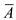
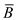

Refer to Figure 13.17 for the CMOS inverter in the text book.
The inverter circuit has one PMOS and one NMOS transistors.
Refer to Figure 13.34 (b) for the complete XOR gate realization in the text book.
The XOR realization has 4 PMOS transistors and 4 NMOS transistors.
In the pull-up network, the PMOS transistors require two inverted inputs,  and  .
.
Thus, it requires 2 PMOS and 2 NMOS transistors.
Therefore, a total of 4 PMOS and 2 NMOS transistors are required for pull-up network realization.
In the pull-down network, the NMOS transistors require two inverted inputs, and . Hence, it requires 2 PMOS and 2 NMOS transistors.
Therefore, a total of 2 PMOS and 4 NMOS transistors are required for pull-down network realization.
Hence, a total of 6-PMOS and 6-NMOS transistors are required for XOR gate realization.
 .
. for and
for and  for in the equation.
for in the equation.